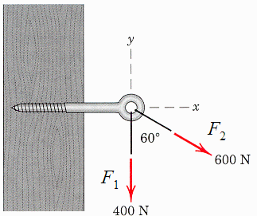
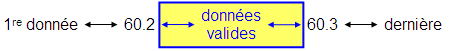

Exercices sur la boucle à fin conditionnelle
La boucle à fin conditionnelle n'est pas un choix judicieux lorsque le nombre
de cycles est connu, comme c'est le cas pour beaucoup des exercices suivants.
Toutefois, cela permet une analogie avec la boucle for – end et favorise la
maîtrise de la boucle while.
Le meilleur choix de boucle est présenté en premier dans les solutions.
- Évaluer approximativement la valeur de e
en calculant les 10 premiers termes de la série après le chiffre 1 :
1 + 1/1! + 1/2! + 1/3! ..+ 1/n!
Solution :
ForNature.m,
WhileNature.m
- La portée P d'un projectile est donnée par l'équation :

Demander à l'utilisateur de fournir la valeur de
v0. Par
exemple, la vélocité d'un projectile de fusil de chasse civil est de
900 m/s. Calculer les valeurs de P en fonction de l'angle θ
variant entre 10 et 60 degrés. Tracer le graphique P en fonction de
l'angle l'angle θ.
Solution :
ForPortee.m,
WhilePortee.m
- Les étudiant-e-s de S3 utilisent une petite soufflerie dans le cadre
d'un projet de session. Des mesures sont effectuées pour évaluer
l'efficacité des différentes hélices à produire une poussée en fonction de
l'angle exprimé en radians. Lire la matrice des données du fichier
Helice.dat et tracer le graphique Coefficient de poussée versus
Angle en degrés.
Solution :
ForHelice.m,
WhileHelice.m
- Les données de la matrice du fichier EnBus.xls représente le parcours
entre le campus principal et le campus de Fleurimont. L'autobus électrique
contrôle les feux de circulation et s'approprie le droit de passage.
Examiner les données et tracer la distance cumulative en km en fonction du
temps cumulatif de parcours en min.
Solution :
ForVitenbus.m,
WhileVitenBus.m
- La légende dit que Fibonacci a conçu sa série (0, 1, 1, 2, 3, 5, 8,
13, 21, etc.) en observant la reproduction des lapins. Chacun des termes de la
série est la somme des deux précédents et représente la population de la
nouvelle génération. Poser que la première génération est le chiffre 2. Afficher la
valeur de la population de la dixième génération de lapins. Ne pas utiliser
de vecteur pour conserver les données.
Solution : ForFibonacci.m,
whileFibonacci.m
- Tracer le graphique d'un battement produit par deux ondes. Générer 1000
valeurs de x également espacées entre 0 et 2 pi. Calculer les
valeurs correspondantes de y1 = sin(20 x)
et de y2 = sin(18 x). Tracer (y1 + y2)
en fonction de x.
Solution :
For2sin.m,
While2sin.m
- Le fichier C.dat contient des ensembles de données
expérimentales. Chaque donnée occupe une ligne. Chaque ensemble est séparé
du suivant par un zéro. Pour chaque ensemble, afficher le nombre de données et
la moyenne.
Suggestion :
Examiner le fichier c.dat. Rédiger tout d'abord un programme qui permet de traiter un premier
ensemble. Généraliser ensuite le programme.
Solution : ForCdat.m,
WhileCdat.m
- Un corps tombe en chute libre d’une hauteur de 50 m. Calculer
sa distance h par rapport au sol à toutes les 0,1 s. Tracer le
graphique pour toutes les valeurs de h au-dessus du sol.
h = 0,5 g t2
Solution : WhileTour.m,
ForTour.m
- Le taux uniformisé hebdomadaire d'une obligation d'épargne de 1000 $ à
intérêt composé est de
0.19 % par semaine (environ 10 % par an). L'intérêt est versé à chaque semaine
et accroît d'autant le capital. Écrire un script qui affiche le nouveau capital
à chaque semaine. Le script s'arrête lorsque le capital est doublé. Tracer la
valeur de l'obligation en fonction des semaines.
Solution :
WhileEpargne.m
- Calculer la série :

pour x = 3 π /2 jusqu'à ce que la différence en valeur
absolue entre deux termes soit inférieure à 10 - 4. Comparer la valeur calculée avec la valeur de
la fonction sinh.
Solution :
WhileSinh.m
- On désire que la résultante des deux forces soit de 650 N ou légèrement
inférieure. Pour ce faire, on déplace la force F2 dans le
sens antihoraire. Pour chaque degré de déplacement, le module de la force
diminue linéairement de 5 N.

En itérant à chaque 0.1 degré, déterminer la position et le module de la
force F2. Afficher l'expression scalaire de F1,
F2 et de la résultante en respectant la convention de
atan2.
Solution : WhileResultante.m
- Le fichier Speculateurs.txt contient des données monétaires comprises
dans un ensemble contenant des valeurs fictives afin de les protéger des
spéculateurs. Les données valides sont situées entre deux valeurs
sentinelles uniques :

Utiliser seulement 2 boucles while (ni for ni if), une
pour détecter le début des données valides, et une autre pour calculer la
moyenne. Tracer les données valides (ronds rouges) en fonction de l'indice.
Ajouter les données fausses (points bleus). Inclure une légende.
Solution :
WhileSpeculateurs.m
Varia : utiliser des booléens dans les calculs et une seule boucle while.
Solution :
WhileSpeculateurs2.m